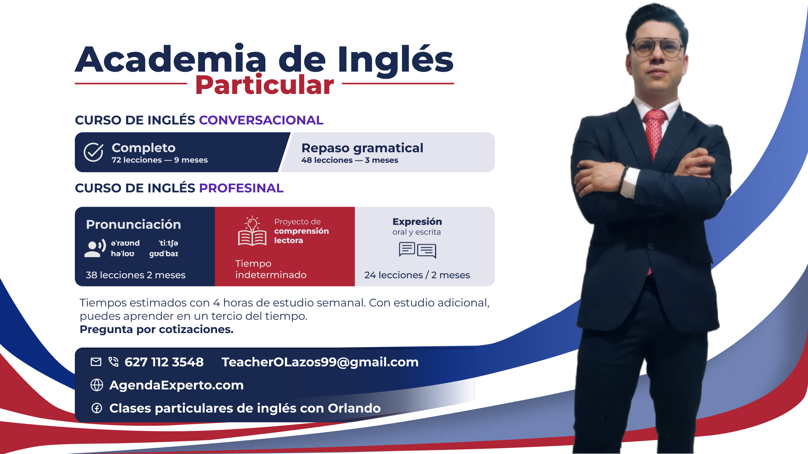

AgendaExperto.com / Orlando
Clases particulares de inglés
Una propuesta clara para estudiar desde cero, retomar tu base o llevar tu inglés a un uso más profesional.
Aquí puedes revisar cursos, temarios visibles, metodología, precios orientativos y la forma más rápida de empezar por WhatsApp.
Online primero
Desde nivel inicial
Sesión informativa sin costo

Con posibilidad presencial en Parral por acuerdo.
Se pueden revisar casos especiales cuando haga sentido.
Cursos
Rutas de estudio para distintos puntos de partida
La oferta está organizada para que el estudiante ubique rápido qué necesita: construir base, reactivar gramática o perfeccionar su comunicación.
Curso conversacional
Completo · 72 lecciones
Para estudiantes desde cero o para quienes quieren una base funcional bien construida.
- Duración estimada: de 3 a 12 meses según intensidad.
- Puede empezar desde lo básico o desde bloques más avanzados.
Repaso gramatical
48 clases
Ideal para quien ya estudió inglés, pero quiere recuperar estructura y claridad.
- Duración estimada: alrededor de 3 meses.
- Se enfoca en conjugación, modales, phrasal verbs y conditionals.
Pronunciación
38 lecciones
Para hablar con más claridad y reconocer mejor el inglés real al escucharlo.
- Duración estimada: de 1 a 3 meses.
- Recomendado para estudiantes con base funcional previa.
Comprensión lectora
Ruta flexible
Un proyecto guiado para leer un libro real, ampliar vocabulario y hablar sobre lo leído.
- El ritmo depende del libro y del nivel del estudiante.
- Combina lectura, comprensión y conversación.
Expresión oral y escrita
24 o 28 lecciones + exposición
Un proyecto para redactar, exponer y defender ideas con una voz más profesional.
- Duración estimada: de 1 a 2 meses según intensidad.
- Útil para estudiantes que quieren comunicar mejor sus ideas.
Ruta visual
Cómo puede avanzar un alumno
Este diagrama no sustituye la orientación personalizada, pero sí te da una vista rápida del camino general.
01
Ubica tu punto de partida
Desde cero, con base olvidada o con necesidad de perfeccionamiento.
02
Elige la ruta correcta
Curso conversacional, repaso, pronunciación, lectura o expresión.
03
Ajusta ritmo y modalidad
Se define intensidad, acompañamiento y cotización orientativa.
04
Empieza por WhatsApp
La sesión informativa sin costo sirve para aterrizar tu caso real.
Temarios
Visible para que sepas qué vas a estudiar
Aquí se muestran los nombres de las clases y módulos visibles. El desarrollo detallado de cada sesión se reserva para el trabajo dentro del curso.
Curso conversacional completo 72 lecciones en espiral
Bloque básico
- Personal pronouns and verb to be
- Object pronouns and possessives
- Demonstratives and reflexive pronouns
- Articles: a, an, the
- Nouns: common, proper, singular, plural
- Countable and uncountable nouns
- There is / There are and quantifiers
- Core adjectives and adjective position
- Prepositions of place
- Prepositions of time
- Prepositions of movement and direction
- Main verbs and sentence building
- Have, have got, and short forms
- Basic modal verbs
- Statements, negatives, and yes/no questions
- Wh- questions and short answers
- Imperatives and basic instructions
- Present simple: form and routine
- Adverbs of frequency in routine talk
- Present continuous: form and actions now
- Present simple vs. present continuous
- Stative verbs and non-continuous meaning
- Numbers, dates, and time expressions
- Basic sentence expansion with and, but, because
Bloque intermedio
- Article choice and specificity in context
- Countability, quantity, and noun precision
- Adverbs: form, types, and position
- Comparative and superlative adjectives
- Comparative adverbs, intensifiers, and mitigators
- Like vs. as and comparison patterns
- Indefinite pronouns
- Relative pronouns and defining clauses
- Gerunds and infinitives
- Constructing questions with auxiliaries
- Question tags
- What vs. which
- Past simple for finished events
- Past continuous for background and interruption
- Used to and past habits
- Future forms: will vs. going to
- Future continuous and future in progress
- Present perfect: experience and present relevance
- Present perfect vs. past simple
- Already, just, still, yet, for, since, ago
- Modal verbs revisited: advice, obligation, probability
- Linking words: adding and contrasting information
- Linking words: reason, result, sequence, summary
- Phrasal and prepositional verbs foundation
Bloque avanzado
- Present perfect continuous
- Modal perfects and past deduction
- Past perfect and narrative sequencing
- Past perfect continuous
- Future perfect
- Future perfect continuous
- Perfect-system integration
- Passive voice: form and focus
- Passive voice across tenses and modals
- Reported speech: statements
- Reported speech: questions, commands, say vs. tell
- Conditionals: zero and first
- Conditionals: second, third, and mixed
- Enough, too, so, such
- Even, else, and advanced emphasis
- Whatever, whoever, wherever, whenever
- Prefixes, suffixes, and word formation
- Do vs. make and delexical verbs
- Advanced phrasal and prepositional verbs with get
- Either, neither, each, every
- Linking words for argument control
- Relative clauses revisited and sentence compression
- Commonly confused words and precision errors
- Advanced grammar integration
Repaso gramatical 48 clases
Conjugación y construcciones temporales
- Los 3 marcos temporales: past, present y future
- Los 4 aspectos gramaticales: simple, continuous, perfect y perfect continuous
- Presente simple: rutinas, hechos y estados
- Presente continuo: acciones en progreso y situaciones temporales
- Presente simple vs presente continuo
- Present perfect: experiencia, resultado y relevancia actual
- Present perfect continuous: duración y proceso que llega al presente
- Present perfect vs pasado simple
- Integración del sistema de presente
- Pasado simple: eventos terminados y secuencia narrativa
- Pasado continuo: fondo narrativo y acción en desarrollo
- Pasado simple vs pasado continuo
- Past perfect: anterioridad respecto a otro punto pasado
- Past perfect continuous: duración acumulada antes de un punto pasado
- Integración del sistema de pasado
- Referencia futura en inglés: panorama general
- Will: decisiones, promesas, ofrecimientos y predicción
- Going to: planes previos e indicios presentes
- Presente continuo y presente simple con referencia futura
- Future continuous: acciones en progreso en un punto futuro
- Future perfect y future perfect continuous
- Integración del sistema de futuro
- Equivalencias y diferencias entre el español y el inglés
- Integración general: leer, interpretar y resolver conjugaciones
Verbos modales
- Qué son los verbos modales y cómo funcionan
- can y could: capacidad, posibilidad básica y cortesía
- may y might: posibilidad y permiso
- must, have to, mustn’t, don’t have to: obligación, necesidad y prohibición
- should, ought to, had better: consejo, recomendación y advertencia
- will y would: predicción, decisiones, cortesía e hipótesis básica
Phrasal verbs
- Qué son los phrasal verbs y por qué cuestan tanto
- Separables e inseparables
- Phrasal verbs literales, aspectuales e idiomáticos
- Phrasal verbs de alta frecuencia para acciones cotidianas
- Phrasal verbs para búsqueda, interacción y resolución
- Integración general y estrategias para seguir aprendiéndolos
Conditionals
- Qué son los conditionals y cómo funciona la lógica condición + resultado
- Zero conditional: hechos generales, reglas y resultados automáticos
- First conditional: posibilidad real y consecuencia futura probable
- Zero vs first conditional
- Second conditional: hipótesis, imaginación y distancia con la realidad
- Third conditional: pasado hipotético, arrepentimiento y resultado no ocurrido
- Second vs third conditional
- Mixed conditionals: del pasado al presente
- Mixed conditionals: del presente al pasado
- Estructuras, variaciones y errores frecuentes
- Conditionals en contexto: consejos, advertencias, hipótesis, análisis y conversación
- Integración general de los 5 condicionales
Pronunciación 38 lecciones
Vocales largas
- /iː/
- /uː/
- /ɑː/
- /ɔː/
- /ɜː/
Vocales cortas
- /ɪ/
- /e/
- /æ/
- /ɒ/
- /ʊ/
- /ʌ/
- /ə/
Consonantes
- /p/
- /b/
- /t/
- /d/
- /k/
- /g/
- /f/
- /v/
- /θ/
- /ð/
- /s/
- /z/
- /ʃ/
- /ʒ/
- /h/
- /tʃ/
- /dʒ/
- /m/
- /n/
- /ŋ/
- /l/
- /r/
- /j/
- /w/
R-colored vowels
- /ɚ/
- /ɝ/
Comprensión lectora Proyecto flexible
Ruta visible del proyecto
Se ajusta al libro elegido y al ritmo del estudiante.
- Selección del libro
- Lectura asistida
- Pronunciación guiada
- Traducción de apoyo
- Vocabulario en contexto
- Conversación sobre lo leído
Expresión oral y escrita Proyecto integrador
Módulo común de escritura guiada
- Elegir tema, propósito y tipo de proyecto
- Cómo se organiza un texto académico breve
- Párrafo, idea principal y desarrollo
- Conectores, cohesión y fluidez del texto
- Registro, claridad y tono académico o profesional
- Parafraseo, resumen y uso responsable de información
- Normas APA vigentes: citas y referencias básicas
- Revisión, corrección y proceso de mejora
Ruta A. Ensayo breve
- Tesis, postura y esquema del ensayo
- Redacción guiada del borrador del ensayo
- Fortalecer argumentación, estilo y cierre
- Edición final del ensayo y formato de entrega
Ruta B. Investigación breve
- Pregunta de investigación y objetivo del trabajo
- Búsqueda guiada de fuentes
- Selección de fuentes y registro de información
- Leer para extraer ideas y tomar notas
- Estructura básica de una investigación breve
- Redacción guiada del borrador de investigación
- Citas, referencias y ajuste de formato
- Edición final de la investigación y preparación para exponerla
Módulo de exposición oral
- Qué hace buena una exposición
- Estructura de una exposición
- Lenguaje de presentación y transición entre ideas
- Apoyos visuales, notas y diseño básico
- Ensayo de exposición y retroalimentación
- Exposición final o simulación formal
Módulo conversacional
- Bases de una conversación guiada
- Dar opiniones, acuerdos y desacuerdos
- Preguntar, repreguntar y hacer avanzar el diálogo
- Explicar, ejemplificar y defender una idea
- Conversación guiada sobre su proyecto
- Sesión conversacional final
Metodología
Una clase particular debe sentirse realmente particular
La propuesta no gira alrededor de grupos masivos ni promesas vacías. Gira alrededor de claridad, personalización y seguimiento cercano.
Personalización real
La clase se adapta al nivel, la meta y el ritmo del estudiante.
Online primero
Permite constancia, comodidad y mejor uso del tiempo sin traslados.
Apoyo de IA con criterio docente
Sirve para enriquecer materiales y ejemplos, no para sustituir al profesor.
Seguimiento cercano
Corrección inmediata, acompañamiento y ajustes según el avance real.
Sobre Orlando
Una propuesta personal con base académica y experiencia bilingüe
Orlando estudió Economía Internacional, vivió un año en Estados Unidos y ha trabajado aproximadamente cinco años en contextos bilingües. Además, ya suma alrededor de dos años como profesor.
Su objetivo con estas clases es ofrecer una opción profesional, clara y accesible para personas que necesitan algo más personalizado que una escuela grupal o una app.

Precios
Rangos visibles desde el inicio
La cotización final depende del tipo de ruta, la intensidad y el nivel de acompañamiento que realmente necesites.
Varía según modalidad, ritmo de estudio y preparación requerida.
Depende de la ruta elegida y puede ajustarse con trato claro desde el inicio.
Sirve para ubicar tu meta, tu nivel y el camino más conveniente.